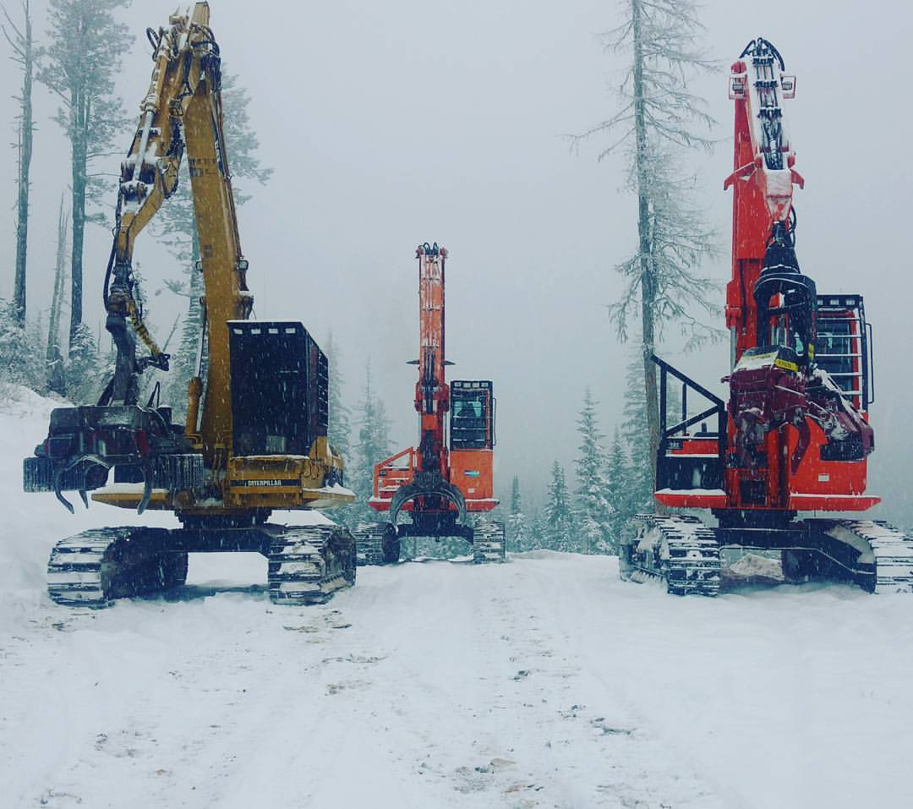

C.R.D. Logging Co.

C.R.D logging is a famiily owned company, with a headquaters
in a small Northwest Montana town in Linclon county called Libby Montana.
Charles Russell Decker is the one who established the 5th generation line
skidding logging company.